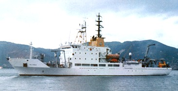

MISSION: To define a feasible design range for Noah's Ark
Sub-clause (ii) And to help explain existing knowledge relating to those 3 chapters of Genesis.

Tim Lovett B.E. Mech Eng (Syd), Grad Dip.Ed. Initiated the project due to interest in the Ark. Tim completed a bachelors degree in Mechanical Engineering at Sydney University in 1988. He worked for a number of years on the design of diagnostic ultrasound equipment and related ventures in experimental therapeutic use of high power ultrasound. Since completing a graduate diploma of Technical Education in 1993, Tim has been a full time instructor for 12 years in technical college engineering courses. and consulting work in mechanical design and prototype development, automation and low volume production technologies. More recently he was technical adviser for degree courses in Industrial Design and Engineering, developing equipment and resources for Rapid Prototyping, before dropping all extra-curricula activities to concentrate on Noah's Ark. Tim and Helen have six home schooled children.
Tim is currently working for Answers in Genesis in Kentucky USA, designing
the exhibits for Noah's Ark.
Jim H. King: Naval Architect (US Navy). Ark analysis. Jim led discussions on the effect of hull form on the seakeeping of Noah's Ark for the AiG Creation Museum team - Kentucky, July 2004. Since then he has used model tests to demonstrate the relationship between the shape of bow and stern and the likelihood of broaching and capsize.

NATO R/V Alliance

Dr Allen Magnuson, Ph. D., P.E. Contact was made through John Morris (ICR president) in Aug 2004. Allen is working on 'lines' for a potential hull shape for Noah's Ark, and investigating wooden ship construction and internal structural layouts.
B.S.in Engineering, University of Michigan (1964) - Naval Architecture and Marine Engineering · M.S. Penn State - Aerospace Engineering (1967) · Ph.D. University of New Hampshire - Applied Mechanics (1972) Project engineer and engineering researcher. Offshore Engineer/Naval Architect Consultant.
Listed in "Who's Who Among America's Teachers, 2000" · First person to compute RAOs (Response Amplitude Operators - definition) for an Air-Cushion Vehicle from seakeeping trial data. Published 17 refereed journal articles and numerous conference papers.
Associate Professor, Texas A & M, Civil Engineering Dept, (Ocean Engineering Program) 1983-1987 · Associate Professor (with tenure), Aerospace and Ocean Engineering Dept., Virginia Tech, 1977-1983 · Naval Architect (Researcher), Ship Dynamics Division, Hydrodynamics Laboratory, Naval Surface Warfare Center, Bethesda, MD, 1964-1968 and 1973-1977 · Supervisory Naval Architect, Portsmouth (N.H.) Naval Shipyard, 1968-1970
.
“Before I was saved in 1987, I was substitute Sunday school teaching from
Genesis 6. At the time I considered the book of Genesis to be an allegory or
legend. While I was preparing the lesson, I realized that the Ark’s
dimensions and proportions as given in Genesis 6:15 were those of a modern cargo
ship. It became clear to me at that point that God designed the Ark as a
seagoing ship with the animals as the cargo.
This was a strong factor in my decision for Christ. I publicly accepted Christ
as my personal savior shortly after this.” AHM July 20, 2005
Thanks
God (the real one). Creator with a very big C. I'm glad He's our God and not someone else. (PS. He's the one in the Bible)
My incredible wife.
"The Ark Team" mid 2004. Boy is this fun or what - nothing but Noah's Ark!
Those magnificent artisans of the Creation Museum.
Andrew Lamb. Information Officer. Creation Ministries International (CMI) Australia. Sent copies of previous ark studies, related articles and other info. Voted #1 best email response for a non-salesman for 2003 (by me)
John Woodmorappe. (THE book - after the Bible of course). Keeps answering my emails and prodding me in the right direction.
Rod Walsh (CMI). Noah's Ark modeler and presenter. Designed and built large display models, cardboard model kits, and a video. Keeping in touch.
Chris Lovett: Microsoft Corp. www.lovettsoftware.com. Slider puzzle, programming assistance and advice.
Tony Lovett: Freelance animation layout and storyboard artist. Cartoons.
Allen Roy: Another brain to pick - and thanks for the messenger chats.
Warwick Armstrong. (retired). Inspiration.
Buddy Davis. The conversation that got me going.
My parents - for sticking to Christian values and ditching the TV. It's working for us too.
All the people and stuff happening at the Creation Museum in Kentucky - whoo-hoo!
Thanks to Moses for getting it all written down, and thanks also to all the generations of Jewish scribes who did such a great job of keeping the text intact.
God. (did I mention Him before?) Good.
God.